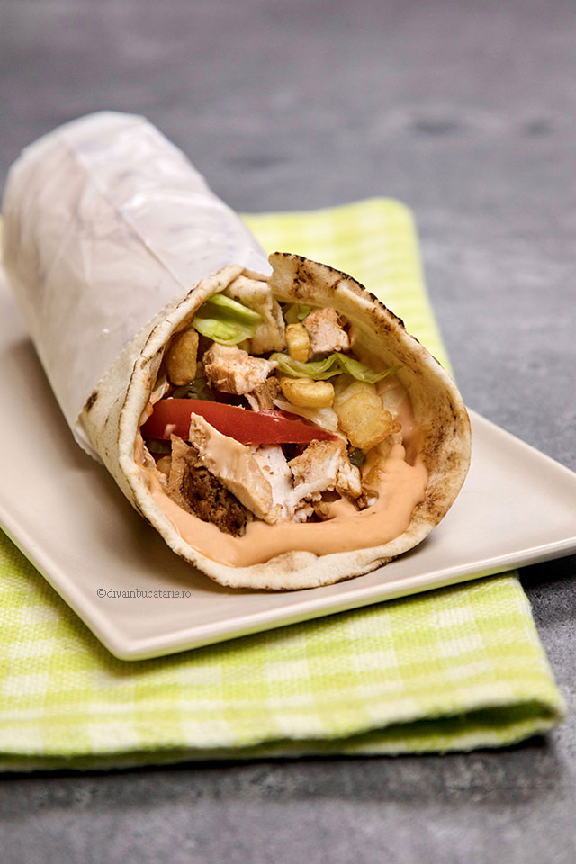

This is shaorma recipe

Description
This kebab sandwich is my version of Turkish kebabs, which I made 'off the cuff' after searching unsuccessfully for a recipe online. The original sandwiches are made from meat pressed into a loaf and grilled on a rotating spit. The meat is shaved off as it gets crispy and put into a pita sandwich. My recipe calls for thin slices of meat to be marinated and then broiled to get the same effect without a huge rotating grill. Serve in a warmed pita with goat cheese, tzatziki sauce, lettuce, tomatoes, onions, and pepperoncini.
Ingredients
Marinade
- 2 large onions, chopped
- 2 garlic cloves, crushed
- ½ cup olive oil
- 2 tablespoons lemon juice
- 1 teaspoon dried oregano
- 1 teaspoon ground black pepper
- ½ teaspoon ground turmeric
- 1 pinch curry powder
- 1 teaspoon salt, plus more to taste
- 1 pound beef flank steak, thinly sliced
Tzatziki Sauce
- 8 ounces sour cream
- 2 tablespoons olive oil
- 1 tablespoon lemon juice
- ½ teaspoon salt
- ½ teaspoon ground black pepper
- 1 tablespoon chopped fresh dill
- 1 clove garlic, crushed
- 6 pita bread rounds
Steps
- Make marinade: Place onions in a large ceramic bowl and crush with the bottom of a glass until juice is rendered and onions look translucent. Stir in garlic, olive oil, lemon juice, oregano, black pepper, turmeric, curry powder, and salt. Add beef and toss to coat. Cover the bowl with plastic wrap and marinate in the refrigerator, 8 hours to overnight.
- Make sauce: Combine sour cream, olive oil, lemon juice, salt, black pepper, dill, and garlic in a medium bowl; mix until well combined. Cover the bowl with plastic wrap and refrigerate for 8 hours to overnight.
- Preheat the oven's broiler and set the oven rack about 6 inches from the heat source.
- Remove meat from marinade, brushing off extra onions; discard marinade. Spread meat on a baking sheet without overlapping. Season with salt.
- Cook under the preheated broiler until meat is browned and crispy, about 3 minutes per side, turning halfway through cooking.
- Divide meat between pita breads and drizzle with tzatziki sauce to serve.
Tips
- You can use chicken instead of beef, too.
Go back